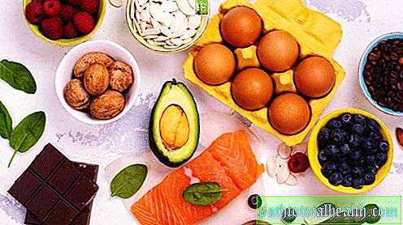

Welcome to tinkamos mitybos maistas
Tinkamos mitybos pavyzdžių meniu kiekvieną savaitės dieną - Sveikas Maistas - 2020
2020.10.30 03:10 Pagrindinis Vaistas Ligų Ir Būsenų, Plastinė Operacija Narkotikai Alternatyvioji Medicina Odontologija Pagrindinis Vaistas Ligų Ir Būsenų, Medicininis Turizmas Vizija Vyras Sveikata Papildus Ir Vitaminus Pagrindinis Papildus Ir Vitaminus Moterų Sveikata Klausymas Ligų Ir Būsenų, Plastinė Operacija Aknė „Adlens“, taškai: atsiliepimai, tipai ir funkcijos. Adlens akiniai: oftalmologų atsiliepimai 2019 Ar medus padidina ar sumažina kraujospūdį? Naudingos savybės ir kontraindikacijos 2019 Liaudies gynimo priemonės viduriavimui vaikams: ryžių vanduo, mėtų ir ramunė, ąžuolo žievė. Tradicinės medicinos receptai 2019 Sveikas Maistas
Tinkamos mitybos pavyzdžių meniu kiekvieną savaitės dieną - Sveikas Maistas - 2020
2019 Pagrindinis Sveikas Maistas Tinkamos mitybos pavyzdžių meniu kiekvieną savaitės dieną - Sveikas Maistas - 2020Yra visuotinė taryba, kuri geriau sekti mus visus ir su kuriais neįmanoma susitarti. Maitinimas turėtų būti įvairus ir vidutinio sunkumo, jums reikia mylėti valgius ir pasimėgauti kiekvienu įkandimu! Tai vadinama sveika, tinkama mityba. Kiekvienai dienai meniu lengva padaryti, ir mes neabejotinai grįšime į šią problemą, bet dabar tam tikrą bendrą informaciją.
Produktų rinkinys ir jūsų porcijos apimtis turi atitikti jūsų veiklos lygį ir individualius organizmo poreikius. Vidutiniškai miesto gyventojui, kuriam būdingas normalus darbo ritmas ir kasdienis vidutinio sunkumo pratimas, vyrams reikia apie 2300 kalorijų ir 2 000 moterų.
Bendrieji tinkamo mitybos principai
Atsižvelgdami į tinkamą mitybos kelią, nepamirškite apie „auksinius“ principus.
Negalima praleisti pusryčių jokiu būdu. Ji turėtų būti įtempta. Tai pusryčiai, kuriuos „paleidžiate“ savo kūno medžiagų apykaitos sistemą. Trumpai tariant, mokslininkai jau įrodė, kad, jei neturite pusryčių, jūs negalėsite numesti svorio. Yra daug skirtingų receptų, o tinkamos mitybos meniu kiekvieną dieną nėra problema. Svarbiausia yra galvoti viską iš anksto. Apsvarstykite: turėtumėte maksimaliai išvalyti „gastronominių nuolaužų“, pvz., Lustų ir barų, mitybą, taip pat sumažinti alkoholio kiekį. Galite palikti sausą raudoną vyną (ne daugiau kaip 1 kartą per savaitę). Maisto riebalai turėtų būti sumažinti. Riebalai gryna forma turėtų būti gaunami iš augalinių aliejų, užpildant juos daržovių salotomis (1 šaukštas per dieną), bet ne iš dešros ir kitų rūkytų maisto produktų. Likusi riebalų dalis, pvz., Pieno produktai.Savaitės meniu
Pasirinkite savo mėgstamus produktus ir - eikite į priekį, jūsų sveikata yra jūsų plokštelėje. Meniu pasirinkimas turi būti pagrįstas jūsų kasdienybe. Galite valgyti 3-4 kartus arba 5-6 kartus per dieną. Arba tai pusryčiai, pietūs, popietės arbata ir vakarienė su keturių valandų intervalais. Arba valgykite kas 3 valandas mažomis porcijomis. Ištyrę daugybę sveikų mitybos meniu receptų kiekvienai dienai, galite sukurti sau puikią mitybą.
Keturių dienų valgio meniu per savaitę
Pirmadienis:
Pusryčiai - košė iš košės. Pietūs - vištienos filė, daržovių salotos (galite garinti daržoves), duonos, arbatos ar kavos gabalas. Užkandžiai - valgykite porą vaisių. Vakarienė - bet koks pieno riebalų pienas su sūrio gabalėliais. Dėka įvairaus tinkamo mitybos meniu, kiekvieną dieną galite pasimėgauti įvairiais maisto produktais, o košė, beje, gali tapti dalyviu ne tik pusryčiams. Įtraukite jį į vakarienę.Antradienis:
Pusryčiai - plakta kiaušiniai arba kiaušinėliai su žalumynais, sultys iš apelsinų. Pietūs - sriuba ar kita daržovių sriuba, dalis mėsos (jautiena, ėriena). Užkandžiai - nesaldinti avižiniai sausainiai ir natūralus jogurtas. Vakarienė - jūros gėrybės ir graikų salotos.Trečiadienis:
Pusryčiai - varškė su grietine, vaisiais, arbata su citrina. Pietūs - grikiai arba ryžiai su žuvimi. Užkandžiai - apelsinas arba kriaušės. Vakarienė - lengva sriuba su mėsos gabaliukais, daržovių salotos. Kiekvieną dieną naudodami tinkamą, sveiką maistą, būtinai įtraukite daržoves. Todėl, jei po pietų nevalgėte šviežių salotų, įtraukite jį į savo vakarienę.Ketvirtadienis:
Pusryčiai - keptuvė su kopūstais, kava. Pietūs - paukštienos filė ir morkų salotos su kukurūzų aliejumi. Užkandžiai - vaisių salotos. Vakarienė - žuvies dešrelės su lęšiais. Žuvies patiekalai, jei laikosi dietos ir tinkamos mitybos, į kiekvieną dieną neįtraukite meniu, leiskite jam būti 2-3 kartus per savaitę.Penktadienis:
Pusryčiai - mažai riebalų varškės troškinys arba sūrio pyragaičiai. Pietūs - bulvės ir morkų salotos. Saugus, - obuolys arba 1 apelsinas. Vakarienė - vinigretė ir tingūs kopūstai.Šeštadienis
Pusryčiai - miežių košė su kava (jei norite, įpilkite pieno). Pietūs - vištienos sriuba, kalamario salotos. Užkandžiai - 1 raudonas arba baltas greipfrutas, keletas riešutų. Šis citrusų vaisius pagreitina medžiagų apykaitą. Taigi, jei jūs taip pat norite numesti svorį, tuomet kiekvienos dienos meniu pasirinkite vieną greipfrutą. Tinkamas, sveikas maistas prisideda prie papildomų svarų praradimo neprarandant geros nuotaikos. Vakarienė - daržovių salotos ir žuvų sriuba su bulvėmis arba žuvies keptuvėmis.Sekmadienis:
Pusryčiai - soros košė su ryžiais ir moliūgais, arbata su citrina. Pietūs - žuvies padažai, makaronai iš durumo. Saugus, - vynuogės arba 2 kiviai. Vakarienė - liesa mėsa su grikių košė.
Tai brangus!
Ir ne! Subalansuota mityba taupo jūsų biudžetą! Kopūstai, morkos, ropės, kefyras, vištienos krūtinėlės ir žuvys - ar šie produktai yra brangesni nei dešros ir dešros? Ar natūralus avižiniai dribsniai yra brangesni nei kukurūzų rutuliukai ar mielės su dideliu cukraus kiekiu?
Meniu 5-6 valgiai per savaitę
Tai yra apytikslė parinktis. Jūs galite derinti produktus patys, kaip tik norite, jūs ir tik jūs esate dietos šeimininkas. Mitybos meniu kiekvienai dienai neturėtų būti kartojamas. Ate bulvės pietums - nevalgykite vakarienei. Prieš miegą, gerti kefyrą ar bet kokį pieno produktą, ne daugiau kaip 2, 5% riebalų. Jie yra prisotinti naudingomis bakterijomis gerinančia virškinimu.
Vakarienės metu turėtumėte pasimėgauti lengviausiu maistu ir, pageidautina, ne vėliau kaip prieš 3 valandas prieš miegą, nes valgyti reikia laiko virškinti.
Pirmadienis:
Pusryčiai - kepti kiaušiniai, kava su pienu. Pietūs - keletas riešutų, obuolys. Vakarienė - ausys, grikiai su troškintomis daržovėmis, sultys. Vakarienė - varškė arba keptuvė, vaisiai. Pabandykite kiekvieną dieną pasirinkti tinkamos mitybos meniu, kad vakarienė būtų lengviausias maistas. Vakarams skirtų porcijų tūris neturi viršyti 150-200 gramų. Prieš miegą - kefyras.Antradienis:
Pusryčiai - grikiai, kava. Pietūs - uogų kokteiliai, krekeriai. Pietūs - bulvių sriuba, salotos, vaisiai. Vakarienė - varškės padažas su uogomis ar koldūnais su varškės. Bedtime - acidophilus.Trečiadienis:
Pusryčiai - manų kruopos su mėlynėmis, kakava. Pietūs - bananai ir skrudinta duona Borodino. Pietūs - grybų sriuba, agurkai ir kopūstų salotos, sūrio gabalas. Vakarienė - mėsa su daržovėmis, arbata. Jei neturite laiko, kiekvieną dieną galite sukurti labai paprastą tinkamos mitybos meniu, į kiekvieną valgį pridedant šviežių sezoninių daržovių. Kasdien nereikia gaminti salotų. Prieš miegą - stikline jogurto.Ketvirtadienis:
Pusryčiai - miežių košė ant vandens, skrudinta duona, kava ar arbata. Pietūs - stiklinė pieno ar šviesaus sorbeto. Pietūs - pieno makaronai, pomidorų, agurkų ir svogūnų salotos. Vakarienė - virtos žuvys arba keptos jūros bosas, daržovių salotos, kava. Prieš miegą - obuolių arba kriaušių.Penktadienis:
Pusryčiai - varškė su grietine. Pietūs - 2 nedideli apelsinai. Pietūs - pupelių sriuba, vištienos krūtinėlė su česnakais, vaisiai. Vakarienė - bulvių gratin, kopūstų salotos. Prieš miegą - kefyras.Šeštadienis:
Pusryčiai - virti kiaušiniai, arbata, skrudinta duona su sviestu arba sūrio sumuštiniu. Pietūs - vaisiai. Pietūs - vištienos sriuba, makaronai su daržovėmis. Vakarienė - žaliosios pupelės pagal tarkuotą sūrį. Prieš miegą - stikline jogurto arba mažai riebalų varškės.Sekmadienis:
Pusryčiai - avižiniai dribsniai, arbata su pienu, skrudinta duona. Pietūs - keletas sėklų, greipfrutai. Pietūs - žirnių sriuba arba maišos, morkų ar ropės salotos, virtos mėsos gabalas. Vakarienė - varškė, vaisiai ar uogos + krekeriai. Bedtime - kefyras arba acidophilus arba ryazhenka.
Mitybos taisyklės
Renkantis savaitės meniu, vadovaukitės šiais principais:
Diversifikuokite maisto prekių krepšelį. Mūsų kūnas turi savitumo priklausomybę, monotoniškų produktų medžiagos paprasčiausiai nustoja absorbuotis. Tai nepaisant to, kad būtini elementai gali būti nedideli produktai. Dėl monotoniškos dietos tam tikru momentu galime jaustis blogai. Pavyzdžiui, renkantis pagrindinį kursą, pirmąją savaitę valgykite jautieną, tada naminius paukščius, tada ėriukus ar žuvis ir pan. Kiekvieną dieną valgykite daržoves ir vaisius. Juose yra fermentų, kurie leidžia geriau įsisavinti maisto produktus. Ir, žinoma, vitaminai ir mikroelementai. Dviejų trečdalių proporcija, perkėlimas į daržoves, trečdalis vaisių. Būtinai įtraukite į mitybos pieno produktus - varškę, grietinę, kefyrą, sūrį. Šiandien yra daug jų, pasirinkti šviežią, normalų riebumą, bet ne daugiau kaip 5%. Valgykite duoną, pageidautina visaverčius. Ir pabandykite panaikinti baltojo miltų pyragus (taip pat ir pipirų, vaflių, šokolado šokolado plytelių - jie nesukels jokios specialios naudos). Duona yra mikroelementų kompleksas, parinktas taip, kad kituose produktuose nėra tokio dalyko. Apskritai, reikia suvartoti 300 gramų įvairių veislių duonos. Taip pat galite pasirinkti tam tikrą dieną tam tikrą duoną. Duona valgo atskirai nuo kitų angliavandenių, todėl sumažės virškinimo trakto apkrova. Reikalingas riebalų kiekis turėtų būti pasiektas su alyvuogių, kukurūzų, augalinių aliejų, pieno produktų, riešutų ir sėklos. Cukrus turėtų būti minimalus, jis apgaubia apetitą, bet nesukelia prisotinimo, bet absoliučiai visos klastingos kalorijos sugeria kūną ir deponuojamos ten, kur nenorime jų matyti. Leiskite savo „atostogoms“ krekerių ar saldumynų pavidalu džiaugtis 2 kartus per savaitę, bet mėgautis taupiai, nevalgykite visą pakuotę vienu metu. Mėgaukitės kiekvieną įkandimą. Jūs turite gerti ne mažiau kaip 2 litrus gryno vandens per dieną. Ribokite druskos suvartojimą - ne daugiau kaip 1 šaukštelis per dieną visų patiekalų sudėtyje, taip pat prieskoniai ir prieskoniai. Virkite, kepkite arba virkite maistu, taip pat naudokite garlaivį. Galite kepti be aliejaus. Leidžiama naudoti groteles. Naudokite tik šviežius produktus arba tuos, kuriuos užšaldėte. Turi būti pamiršta apie parduotuvės pusgaminius.Rekomendacijos meniu
Aukščiau pateiktų kasdienio mitybos meniu pavyzdžiai gali būti jūsų paties patiekalų pasirinkimo pagrindas, jūsų vaizduotės skrydis gali ir turėtų būti daug platesnis. Štai keletas patarimų, kaip pridėti savo dietos įvairovę.
Prieš pietus pabandykite suvartoti didžiausius angliavandenius ir riebalus. Vakare jūsų mityboje turi vyrauti baltymų maisto produktai. Kokie maisto produktai turi gyvūninių baltymų? Jie turi dalyvauti pietų ir vakarienės metu. Tai visos jūros gėrybės, kalmarai, krevetės, upės ir jūros žuvys, vištiena, kalakutiena, ėriena, jautiena, liesa kiauliena, kefyras, 1% riebalinis pienas, varškė su ne daugiau kaip 3% riebalų, naminiai mažai riebalų turintys sūriai, vištienos ir putpelių kiaušiniai . Užpildykite daržovių salotas su augaliniu aliejumi (kukurūzų aliejumi, alyvuogių aliejumi), kitaip maistinės medžiagos iš daržovių paprasčiausiai nesupjauna. Visi žino, kad iš morkų esantis vitaminas A absorbuojamas tik su aliejumi. Du ar tris kartus per savaitę mitybos specialistai pataria įtraukti žuvis arba jūros gėrybes į savo dienos ar vakaro patiekalus, šie patarimai gali būti vertinami beveik visose atsiliepimuose apie mitybos meniu. Kiekvieną dieną pietums valgyti mėsą ar vištieną labai erzina, o kepta žuvis yra ne tik skanus, bet ir labai naudingas produktas, bet tik jei jis yra šviežias. Būkite atsargūs su jūros gėrybėmis - šiandien yra didelė rizika įsigyti žemos kokybės prekes, nes jos yra transportuojamos iš tolo, teisingos temperatūros sąlygos ne visada pastebimos, o kartais daug kartų jas užšaldomos, todėl geriau jas nusipirkti iš tų pačių tiekėjų. Kepkite arba kepkite. Bet ne keptuvėje su sviestu. Jei vakare esate labai alkanas, išgerkite 1% kefyro, tai yra daug naudingesnė galimybė nei valgyti vaisių. Angliavandeniai naktį yra geriau, jei nenaudojate, todėl jie nededa ant klubų ir pilvo. Galite valgyti daržovių salotas. Gerkite naminius vitaminus, ypač ne sezono metu.
Kiek kainuoja valgyti sveiką kiekvieną dieną
Biudžeto meniu yra tai, ką kiekvienas iš mūsų siekia valgyti racionaliai ir nebrangiai. Pažiūrėkime, kiek mes galime „pabėgti“ per dieną vienam asmeniui.
Pusryčiai: varškė - apie 40 rublių. Antras pusryčiai: vaisiai - apie 20 rublių. Pietūs: sriuba, salotos, mėsa - 200 rublių. Saugus, vaisiai - apie 20 rublių. Vakarienė: žuvis ir daržovės - apie 80 rublių.Iš viso apie 360 rublių. Dabar palyginkite šį skaičių su kelione į kavinę. Koks yra vidutinis greito maisto verslo patikrinimas? Jūs galite tilpti 400 rublių, bet tai tik vienas valgis …
Receptų pavyzdžiai
Tinkamos mitybos dietos meniu kiekvieną dieną nėra taip sunku mąstyti, ir tai jums nereikės daug laiko. Būtų daug blogiau, jei norėtumėte valgyti greitai, o ne praleisti 10 minučių paprastam pietums ar pietums. Greito kepimo angliavandeniai „paslys“, įsisavindami 100%, ir dėl didelio cukraus kepimo kiekio jūs pajusite tikrą alkio tinkamumą, ir jūs neturėtumėte to patirti. Pusryčiai ir pietūs - tai tie patiekalai, kurie turi būti jūsų kasdienėje aplinkoje. Jei neturite laiko valgyti per dieną ir užpildyti vakare, tada atsisveikinkite su sveiką miegą. Maitinkite su jumis darbe ar kelyje esančiame inde, tai nėra problema. Jei naktį priversti skrandį virškinti maistą, jis yra tingus, susidaro toksinai, virsta druskos nuosėdomis.
Žemiau siūlome jums naudingą ir greitą patiekalų ruošimą, paimkite juos į užrašą.
Virti virtos daržovės su žolelėmis, prieskoniais sviestu
Jums reikės:
Svogūnai (raudoni) - 1-2 vnt .; porai arba varškės - 10 g; konservuoti žirniai - 1 bankas; sviestas - 70 g; brokoliai - 500 g; žalieji svogūnai - 250 g; čiobrelių, petražolių ir botanikos - 10 g; juodieji pipirai, druska - pagal skonį.Įtraukite šį paprastą receptą tinkamos mitybos meniu kiekvienai dienai (gatavo patiekalo nuotrauka pateikta pirmiau) - ir jūs suteikiate organizmui visus vitaminus iš daržovių, nes jie puikiai prilyginami dėl sviesto kiekio inde. Maisto gaminimui taip pat reikia vienos citrinos sulčių. Supjaustyti brokoliai, žalieji svogūnai ir svogūnai. Čia galite pridėti bet kokių daržovių. Įdėkite juos į dvigubą katilą, virkite apie 20 minučių. Daržovių virimo metu sumaišykite lydytą sviestą su žolelėmis, prieskoniais ir citrinos sultimis. Patiekite daržoves ir patiekite.
Kalalaatico - Suomijos bulvės su silkėmis
Jums reikės:
bulvės - 700 g; šviežia silkė - 300 g; svogūnai - 1 vnt .; mažai riebalų turintis pienas - 130 g; žalias vištienos kiaušinis - 2 vnt; kviečių miltai (galite paimti rugius) - 1 valgomasis šaukštas. l.; augalinis aliejus - 2 šaukštai. l.; druska, juodieji pipirai, mėgstami prieskoniai - pagal skonį.Nuluptos bulvės supjaustytos gabaliukais. Paimkite giliai keptuvę arba keptuvę, supilkite sviestą į apačią, įdėkite bulves ir silkę viršuje. Pjaustykite svogūnų lemputę kiek įmanoma mažiau ir pabarstykite silkę, pridėkite miltus ir augalinį aliejų. Virkite, kol virti bulvės per mažą ugnį.
Toliau jums reikės iš anksto pašildytos 200 laipsnių orkaitės. Kepkite kiaušinius pienu, supilkite mišinį ant paruoštų bulvių. Įdėkite groteles į orkaitę ir palaikykite maždaug 10 minučių, kol atsiras auksinis pluta.
Karpis sezamo kailis
Jums reikės:
švieži karpiai - 1 žuvis; citrinų arba kalkių - 1 didelis arba 2 mažas; Sezamo sėklos - 3 šaukštai. l.; Juodieji pipirai, druska, mėgstami prieskoniai - pagal skonį.Sudedamųjų dalių skaičius apskaičiuojamas pagal keturias porcijas. Įkaitinkite orkaitę iki 200 laipsnių. Išplaukite žuvis, išdžiovinkite popieriniu rankšluosčiu. Sutepkite jį prieskoniais. Iškirpkite citrusinius vaisius per pusę. Padėkite pusę viduje žuvies ir užpilkite sulčių iš antrojo karpio. Kaip galutinis akordas, pasukite žuvis sezamo, kurį taip pat galite dėti į karpių vidų. Žuvis, suvyniota į foliją, kepa 20-25 minučių.
Vištienos kepenėlės su daržovėmis
Jums reikės:
vištienos arba kalakutų kepenys - 650 g; morkos ir svogūnai - 1 vnt; salierai - ketvirtadalis šaknų; augalinis aliejus (alyvuogių) - 140 g; druska ir juodieji pipirai.Kruopščiai nuplaukite ir pamerkite vištienos kepenis, padenkite vandeniu, užvirinkite, išleiskite vandenį, įdėkite kepenis į keptuvę ir virkite, kol pasiruošsite (20 minučių). Atskirai užgesinkite smulkiai pjaustytas daržoves. Sumaišykite mėsą ir daržoves maišytuve, sumaišykite iki pastos konsistencijos, pridedant pipirų ir druskos. Taip pat galite pridėti šiek tiek mėgstamų prieskonių pagal skonį. Šios proporcijos skirtos penkiems svečiams ruošti maistą. Patas gali būti laikomas šaldytuve kelias dienas (bet ne daugiau kaip penkias), o meniu galite įjungti bent kiekvieną dieną. Tinkamos mitybos savaitė - ir jaučiatės labiau linksmas ir geresnis. Išbandykite!
Daržovių lasagna
Paimkite lazerna plokštelę iš kietų miltų ir gausite labai naudingą ir skanų patiekalą. Be tešlos, reikės 200 gramų baklažanų ir cukinijų, taip pat trys pomidorai, 150 g virtų morkų, 60 g mažai riebalų grietinės, alyvuogių arba kukurūzų aliejaus ir 2 skiltelės česnako. Daržovės, supjaustytos plonomis juostelėmis, išskyrus pomidorus, juos - apskritimus. Kepkite juos šiek tiek alyvuogių aliejuje. Perpilkite česnaką per spaudą ir sumaišykite su grietine, įdėkite mišinį į daržoves. Užvirinkite tešlą. Perkelkite jį į daržovių įdaru ir kepkite, kol bus padaryta.
Veršiena su virtomis daržovėmis
Sveika mityba reikalinga ne tik moterims, bet ir vyrams. Tinkamos mitybos meniu kiekvieną dieną būtinai turėtų apimti mėsos produktus, jei esate stipresnės lyties atstovas. Toliau pateiktame recepte galite paimti visiškai bet kokią mėsą, jei ji yra liesa. Paimkite visas mėgstamiausias daržoves. Virti veršienos (virti 1, 5 valandos) supjaustyti griežinėliais. Nuo sultinio galite virti savo mėgstamą sriubą. Pomidorai ir cukinijos, moliūgai ir baklažanai, brokoliai ir žiediniai kopūstai, porai, kitos daržovės supjaustytos gražiais gabalais ir kepamos orkaitėje. Pjaukite pjaustytą mėsą ant patiekalo su daržovėmis, pabarstykite mažai riebiu tarkuotu sūriu. Papuoškite salotų lapais ir patiekite su krienais.
Pusryčių pasirinkimas - avižiniai pyragaičiai
Šis receptas puikiai tinka sveikai ir subalansuotai mitybai. Nebijokite žodžio „tortas“, desertas visai nekenkia jūsų kūnui, jei valgote pusryčiams. Jums reikės:
Skraidančios avižiniai sausainiai mėlyname pakete - 2 pakuotės; riebalų jogurtas, pageidautina natūralus - 500 g; cukrus - 200 g; vanilinis cukrus - 1 maišas; braškės ar kitos uogos - 150 g; kava; želatina - 1 maišelis (skaičiuojamas 1 litro vandens).Kadangi mūsų recepte nenaudojame riebalų aliejaus ir kondensuoto pieno, želatina veiks kaip tirštiklis. Ištirpinkite jį 100 g vandens, sumaišykite jogurtą su cukrumi ir vaniliu, sumaišykite mišinį maišytuve. Ji turėtų užšaldyti - įdėkite į šaldytuvą.
Padarykite kavos tirpalą - 1 šaukštelis. 0, 5 litrų vandens, jis turėtų būti šiltas, bet bet kuriuo atveju ne karštas. Paimkite didelį gražų patiekalą ir formuokite pyragą. Kepinį supilkite į kavos tirpalą 2 sekundes, nuimkite ir padėkite ant indo.
Jokiu būdu nelaikykite kavos „vandens“ sausainių ilgiau, kitaip jis suskaidys, o jūsų tortas neteks savo išvaizdos ir taps netvarka.
Įdėkite indą į tokius slapukus - tai bus pirmasis sluoksnis. Gerai tepkite jį jogurto-želatinos mišiniu. Antrojo sluoksnio sausainių, sudrėkintų kavos, tepkite jogurtu. Tęskite, kol baigsis slapukai ir jogurtas, kuris turėtų užpildyti paskutinį sluoksnį. Laisvai tepkite tortą visame jo paviršiuje. Gerkite viršutinėmis uogomis ir šaldykite. Po dienos, pyragas gali būti valgomas.
Vietoj jogurto galite vartoti mažai riebalų grietinę arba vaisių varškę, netgi galite pridėti šiek tiek sutirštinto pieno arba virtą kondensuotą pieną - parodyti vaizduotę, būkite lankstūs, bet sekite priemonę.
Mes siūlėme jums keletą variantų, kaip kiekvienai dienai pateikti pavyzdinį tinkamos mitybos meniu. Tai yra pagrindas. Būkite kūrybingi, sugalvokite, pabandykite sau ir savo artimiesiems! Kuko su meile! Atminkite, kad sveikata prasideda nuo plokštelės turinio. Mėgaukitės valgiu!
Rekomenduojama Redaktoriaus Pasirinkimas Alternatyvioji MedicinaKas padeda „Turboslim“ (arbata)? Vartotojų atsiliepimai, indikacijos ir dozavimas
2020-10-30 Sveikas MaistasPažiūrėkime, kokių vaisių galite valgyti slaugos mama
2020-10-30 Žmonės Su NegaliaDejerin-Klumpke paralyžių naujagimiams ypatumai
2020-10-30 NarkotikaiGydymas pankreatitu: vaistų ir liaudies gynimo priemonės
2020-10-30 Ligų Ir Būsenų,Gydomoji schistosomazė: gydymas, diagnozė, simptomai
2020-10-30 VaistasGeriausias Maskvos endokrinologas: atsiliepimai
2020-10-30 RekomenduojamaKur padaryti ultragarso Maskvoje. Klinikų apžvalgos
2020-10-30„Potencialūs Forte“: atsiliepimai, kainos, instrukcija
2020-10-30Kas yra sirupas, kosulio sirupas?
2020-10-30Manijos asmenybės sutrikimai
2020-10-30 Populiarios TemosNutukimo mitas, kurį reikia nustoti tikėti
2020-10-30Kas yra geriausia užpildymo medžiaga?
2020-10-30Išangės uždegimas: priežastys, gydymas, prevencija, poveikis
2020-10-30Prietaisas „Union-Apollo“: prostatito gydymo efektyvumo apžvalgos, nurodymai
2020-10-30Copyright 2020.
